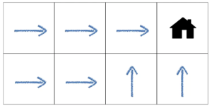
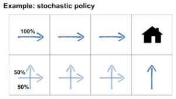
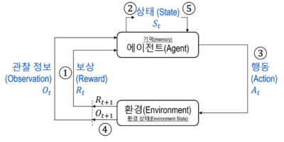
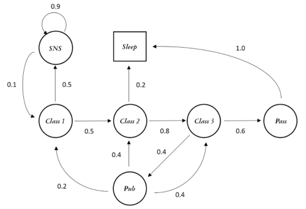
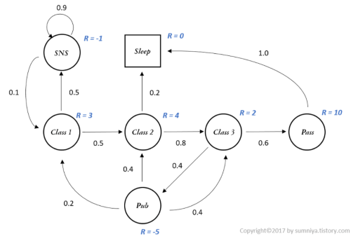
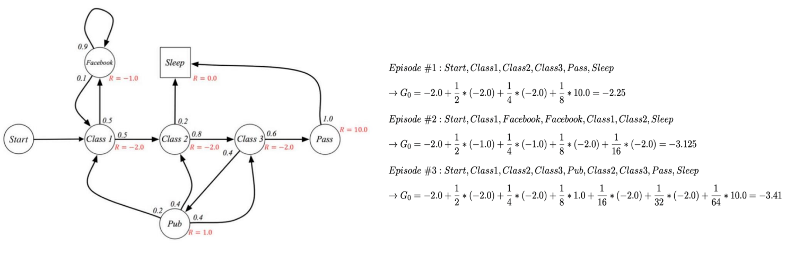
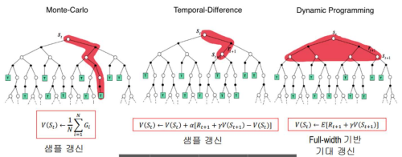

인공지능 분류:약 인공지능: 일부 기술강 인공지능: 모든 기술초 인공지능: 인간을 뛰어 넘음
모티브: 스키너 상자
강화 학습 개념
Reword 그니까 보상이라는 개념을 도입하여 가중치와 편향을 학습시키는 방식
- 비지도 학습에 일부분으로 보이나 보통은
지도학습,비지도 학습,강화학습으로 따로 분류되어 기계 학습에 하위로 분류됨 - 문제를 MDP로 표현함
- 궁극적으로 누적 보상의 기대값을 최대화 하는 학습 전략
구성요소
Agent
강화학습을 실행하는 주체
환경 (Environment)
Agent가 직접 상호작용하는 대상 Agent의 행동을 입력으로 받음
종류
에피소딕 환경: 종료 상태가 존재하는- 예를들어 바둑 두는 인공지능 이라던지
지속적 환경: 종료가 없는- 주식 가격 예측 이런거
결정적 환경:- 임의의 상태에 대해 결과(보상) 이 항상 일정함
확률적 환경:- 위와는 반대로 일정하지 않음
구성요소
환경 상태:- 도구, 장애물 등과 같이 환경을 구성하는 중요 요소들
- 가능한 모든 정보는 환경이 될 수 있음
- 당연하지만
Agent에게 노출되지 못함
관찰정보:Agent가 환경을 마주하면서 얻는 즉각적인 상태 표현
상태 (State)
환경으로부터 받는 관찰 정보, 행동, 보상 등을 저장, 관리하는 상태정보
행동
Agent가 환경에게 전달하는 입력 정보
- 수행 할 수 있는 동작은
Agent가 인식하는 상태마다 다름
보상
Agent가 수행한 행동에 대해 환경이Agent한테 전달 하는 값
- 해당 값에 따라
Agent의 행동을 다르게 바꿀 수 있는 중요 요소
정책 (Policy)
Agent가 주어진 상태에서 어떤 선택을 하는지 결정하는 규칙
-
결정적 정책: 임의의 상태에 대해, 행동이 정확히 한 개로 결정
- 위 예제 처럼 집을 가기 위해
Agent가 어떤 곳에 있던 방향이 정확히 하나다.
- 위 예제 처럼 집을 가기 위해
-
확률적 정책: 임의의 상태에 대해 행동이 확률로 결정
- 위 예제처럼 집을 가는 방향이 어디여도 그렇게 상관은 없기에 이동 값을 확률로 준다
가치함수 (Value Function)
상태 가치 함수:Agent가 위치 할 수 있는 경우에 대한 기대값을 정의하는 함수- 임의의 타임스탭에 방문한 임의의 상태에서 임의의 정책에 따라 계속 행동 할 경우 얻을 수 있는 기대 이득
행동 가치 함수:- 임의의 상태에서 선택하여 수행되는 행동이 얼마나 유익한지를 나타냄
- 임의의 타임스탭에 방문한 임의의 상태에서 임의의 행동을 계속 수행 한 이후 임의의 정책에 따라 행동을 계속 할 경우 얻는 기대이득
종류
Model-Based Algorithm
- 환경에 대한 모든 설명을 알고 문제를 해결해 나가는 방식
- 모델은 현재 상태와, 행동을 알고 다음 상황을 예측해감 즉 모델은
Planning(계획)에 이용되어 예측 가능한 모든 상황을 고려함
Model-Free Algorithm
- 위와 반대로 아무런 상태나, 환경에 정보 없이 문제를 해결 해감
- Agent가 행동을 통해 보상 합의 기대값을 최대로 하는
정책함수(Policy Function)
특징
- 강화 학습은 타임 스탭으로 나눠진 상태, 행동, 보상 정보를 취급
Agent가 행동을 결정하여 얻는 보상은 즉시 받지 못하고 한참 후에 받을수도 있다- 이는 강화 학습에 난이도를 높힌다
강화 학습 절차

- 매 타입 스탭을 거칠 때 마다
Agent는 환경으로 부터 보상과, 관찰 정보를 동시에 받고 자신에 Memory 에 저장 Agent는 갱신된 저장소에서 바로 상태 정보를 구성- 해당 정보를 토대로 행동 선택 및, 수행
- 수행 이후 환경은 다시 보상 및 관찰정보를
Agant에게 전달, 새로운 상태 구성 - 동일한 동작 반복
주요 사용 사례
- 게임AI, 자율주행, 바둑(알파고)
마르코프 과정 (Markov Process a.k.a MP)
- 시간에 따라 주어진 환경에 상태 변화를 상태 전이 확률로 기술하는 과정
- 어떤 미래를 예측할 때 과거를 고려하지 않고 현재 상태 만 참고함
- 과거를 저장할 필요가 없으므로 메모리나 모델 사이즈를 크게 줄일 수 있다는 것이 장점
- 확률이 독립 변수인 경우에는 과거의 데이터가 무쓸모이므로 해당 작업에서 큰 빛을 바램
확률 과정
시간이 변함에 따라 상태가 확률적으로 변하는 과정
확률변수 x: 무작위 실험 시 특정확률로 발생할 수 있는 현상을 수치화- 예) 동전던지기
표본 공간 S= { (앞,앞), (앞,뒤), (뒤,앞), (뒤,뒤) }
이때 두 동전 모두 뒤가 나올 확률=1/4
- 예) 동전던지기
- 확률 과정은 시간에 따라 환률 변수가 바뀌는 것에 초점을 둔다
Markov property
어떤 타임스탭에서
Astate 에 도달하던 그 이전에 다른Nstate 를 거쳐 왔던 상관 없이 다음 State 로 갈 확률은 항상 같다
단순 과정

- 위 Markov Chain 예시처럼 과거에 어떤 곳을 거쳐왔건 상관없이 현재 상태에서 다음 스탭으로 이동하기 위한 확률에만 의존한다
에피소드: 각각에 확률변수로 나올수 있는 경우에 수를 나타내는 단위
보상과정 (MRP)

- 각 state 에 대해 이것이 얼마나 가치있는 행위인지를 나타내는 변수 R을 추가
- 딥러닝에 가중치와 비슷하다
이득 (return): 임의의 타입 스탭에서 얻는 이득
감가이득
Agant가 현재 상태에서 받을 보상들의 총합을 할인률(r)을 활용해 현재가치로 환산한것
- 강화학습에 목표가 장기적인 보상을 최대화 하는것 이라 미래의 보상을 고려 하되, 시간이 지남에 따라 중요도를 점진적으로 낮춤
- 즉 너무 현재가치만 중요시하지도 않고, 너무 먼 미래에만 집중하지 않도록 하는것임
감가율 (r)

가치=현재가치(R)+감가율(r)*현재가치(R)
r=0: 즉각적인 보상만 고려r=1: 모든 보상을 동일한 가치로 고려0 < r < 1: 미래의 보상 가치를 점차 할인시켜 가까운 미래에 보상을 더 중요하게 여김
마르코프 결정 과정 (MDP)
MRP+action
- 위에는 단순히 환경에 대해서 가치평가를 하였다면
Agent가 하는 행동에 대해서도 각각의 가치를 계산함 - 사실상 위에있는건 다 집어치우고 이것만 쓴다
동적 프로그래밍
- 큰 문제를 작게 쪼게서 해결하는 장식
- 마르코프 결정 과정에서 쓰이는 모든 수를 계산하는 방식
최적 가치 함수
벨만 방적식
상태 및 행동 가치를 구하는 핵심 수식
상태가치:- 현재 상태에 대한 가치=실행한 행동에 대한 보상+미래 가치의 합
- 재귀적으로 표현됨
행동가치:- 현재 상태+특정 행동을 취한 미래 가치
- 특정 행동을 했을때 보상과 이후에 또다시 했을 경우의 가치를 더함
한계
- 이게 환경의 규모가 커지면 커질 수록 모든 경우에 수를 다 따지므로
시간 복잡도가 기하 급수적으로 상승
몬테카를로 방법
위 벨만 방적식의 시간 복잡도 문제를 해결하기 위해 나온방법
- 환경과의 상호작용 또는 시물레이션을 통해 얻는 샘플들을 사용하여
가치함수와 최적정책 갱신 - 가치함수와 정책이 서로 상호작용 하면서 최적의 접점을 향에 나아감
- 종료 상태가 존재하는 에피소딕 환경에서만 사용 가능, 타입 스텝 사이에서는 정책 개선 불가, 부트스트랩 사용안함
역 갱신 다이어그램
- 종료 상태를 만나면 해당 종료 상태로부터 역 방향으로
- 생성 되면서 얻은 여러 누적 보상을 평균하여 상태(s) 의 가치를 갱신
방법
모든 방문 MC 예측- 매번 방문할 때 마다 모든 보상의 합 평균
첫 방문 MC 예측- 동일 에피소드 내 처음 방문했을 때에만 그 이후 모든 보상들의 합 평균
탐험적 시작- 위 두 방법에서 방문하지 못한 에피소드 환경이 발생 하는데 이걸 극복하기위해
- 초기 상태를 임의로 시작
한계
- 근사값이라 결국은 완벽한 최적값은 아님
- 정확도를 높이기 위해서 더욱더 많은 반복을 하는것이 좋으나 문제는 몬테카를로 보다 훨씬 시간복잡도가 높아질 수 있음
시간차 학습 (TD)
몬테카를로 + 동적 프로그래밍
- 매 타임 스텝마다 가치 함수 및 정책을 업데이트를 수행
- 몬테카를로와 유사하게 직접 경험 샘플 데이터로 학습
- 동적 프로그래밍과 유사하게 에피소드 완료를 기다리지 않고 타임 스텝별로 모델 갱신, 부트스트랩 사용
배치 업데이트
- 배치 내 타겟 값들을 각 상태별로 모두 합치고 평균을 내어 상태가치 함수를 한번에 갱신하는 방식
사용이유
- 임의의 상태의 가치를 보다 정확하게 추출 가능
- 여러 샘플을 고려하여 타겟값을 추출 하므로
- MDP 의 최적 경로를 가장 정확하게 알아냄
장점
- 동적프로그래밍 보다
- 보상체계, 상태전이 확률등 완벽한 모델을 요구하진 않음
- 몬테카를로 보다
- 하나의 스텝 진행 이후에 상태 가치 갱신이 이루짐 때문에 학습이 실시간으로 이루어 질 수 있음
- 더 범용적인 모든 문제에 적용가능
참고사항
- TD 학습과 MC 중 어느것이 더 학습속도가 빠른지 증명은 안되었음
- 다만 실험적으로는 TD가 MC보다 빠르다
DP & MC & DP
